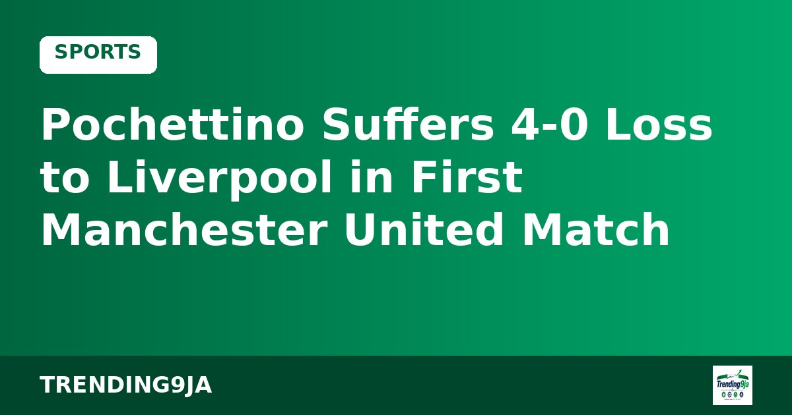
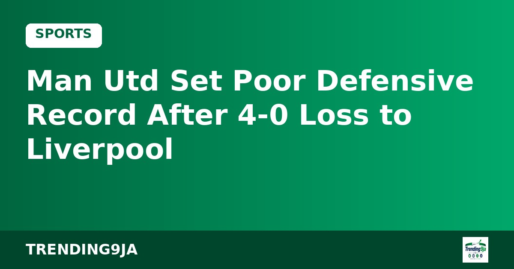

Pochettino Suffers 4-0 Loss to Liverpool in First Manchester United Match
Mauricio Pochettino endured a heavy 4-0 defeat to Liverpool in his first game as Manchester United manager following an early red card for Leny Yoro.
Chelsea striker Emmanuel Emegha is making a name for himself in the English Premier League, catching the attention of football followers following his impressive showing against Nottingham Forest, according to Vanguard.
The 23-year-old attacker came off the bench as a substitute for Danny Welbeck while Chelsea were trailing by two goals. Emegha struck twice, finding the back of the net in the 54th and 89th minutes to give his team a chance, though Forest ultimately claimed a 3-2 victory after Morgan Gibbs-White also scored.
The brace followed an earlier strike the previous week, when Emegha opened the scoring for the Blues against Leeds United at home. Chelsea, however, went on to suffer a 4-1 loss in that fixture despite his initial contribution.
Beyond his early displays for the London club following his transfer from French side Strasbourg, the young forward has captured attention in West Africa due to his family background. Emegha was born in The Hague, Netherlands, to a Nigerian mother and a Togolese father, giving him strong West African ancestry.
Despite his eligibility for Nigeria, Emegha decided to commit his international future to the Netherlands. He earned his senior international debut against Poland in November 2025, stating publicly that the Netherlands is his homeland and expressing pride in representing the Dutch national team.
Sources: Vanguard
← More Sports stories
Mauricio Pochettino endured a heavy 4-0 defeat to Liverpool in his first game as Manchester United manager following an early red card for Leny Yoro.

Manchester United have conceded 34 goals this season following a 4-0 defeat to Liverpool, marking the worst defensive tally in Europe's top five leagues.

Taiwo Awoniyi scored his second Premier League goal of the season as Coventry City defeated Crystal Palace 3-2 at the CBS Arena on Saturday.
Nigeria's trending news, politics and entertainment, straight to your email.
By subscribing you agree to our Privacy Policy. Unsubscribe any time.